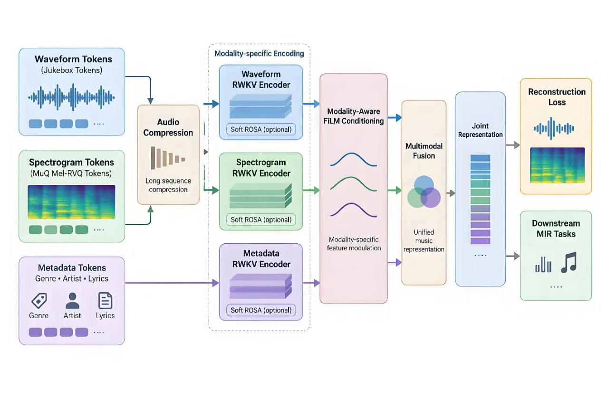
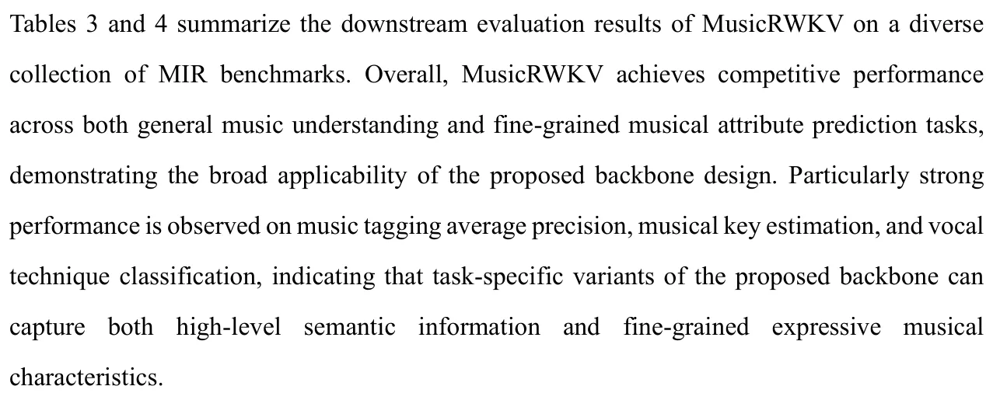
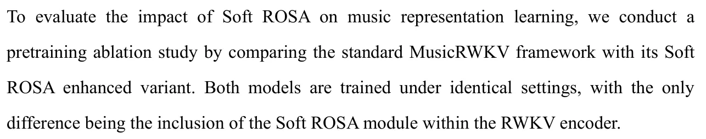

O Problema dos Transformers em Áudio Longo
A aprendizagem de representação musical tem se tornado um pilar fundamental na Recuperação de Informação Musical (MIR). Modelos fundacionais recentes, como MERT, MusicFM e MuQ, demonstraram capacidade generalista impressionante em tarefas como classificação de gênero, estimativa de tonalidade e reconhecimento de emoções. No entanto, esses modelos dependem predominantemente de arquiteturas Transformer. Embora eficazes, os Transformers sofrem com complexidade quadrática de atenção e consumo de memória linear crescente devido ao cache de chaves e valores (KV cache). Para gravações musicais longas, onde o tokenizador pode gerar sequências de dezenas de milhares de tokens, isso se torna um gargalo significativo de memória e computação, tanto no treinamento quanto na inferência.
Em resposta a essa limitação, arquiteturas baseadas em espaços de estado e redes recorrentes ganharam destaque por oferecerem complexidade de inferência linear. O RWKV é um exemplo proeminente, combinando a paralelização do treinamento do Transformer com a eficiência de memória da rede recorrente. Apesar de seu sucesso em geração de música simbólica (via MIDI-RWKV), seu potencial para aprendizado de representação de áudio auto-supervisionado permaneceu inexplorado. Este paper preenche essa lacuna propondo o MusicRWKV, um framework multimodal que busca equilibrar eficiência e riqueza de representação.

Arquitetura Multimodal e Compressão Invertível
O MusicRWKV é desenhado para modelar três modalidades complementares: waveform (forma de onda), espectrograma e metadados semânticos. O fluxo de dados começa com a tokenização. O waveform é convertido em tokens discretos usando o tokenizador Jukebox, preservando estruturas temporais finas. O espectrograma utiliza o tokenizador MuQ Mel-RVQ, focado em características timbrais e harmônicas. Metadados (artista, gênero, letras) são convertidos em tokens textuais. Uma inovação chave é o módulo de compressão invertível aplicado ao waveform e ao espectrograma. Este módulo reduz o comprimento da sequência antes de entrar no encoder RWKV, diminuindo a carga computacional, mas preserva a capacidade de reconstrução dos dados originais. Metadados não são comprimidos, sendo enviados diretamente.
Cada modalidade é processada por branches RWKV independentes. Como o RWKV não possui um mecanismo nativo de atenção cruzada (cross-attention) para fusão multimodal, os autores empregam uma estratégia de condicionamento FiLM (Feature-wise Linear Modulation). O FiLM ajusta as representações de cada modalidade com base nas características das outras, permitindo interação multimodal sem o custo computacional elevado de mecanismos de atenção entre modalidades. As representações moduladas são então fundidas em um espaço de representação único, otimizado por objetivos de auto-supervisão multimodal.
Integração Neural-Simbólica com Soft ROSA
Além da fusão multimodal básica, o paper investiga a integração do Soft ROSA como um mecanismo de recuperação diferenciável. O Soft ROSA atua como um mecanismo de seleção de especialistas sem roteamento explícito, onde um subconjunto de candidatos relevantes é enfatizado seletivamente. Isso introduz interações neural-simbólicas estruturadas, agregando representações históricas de candidatos. O objetivo é melhorar a capacidade do modelo de capturar dependências de longo alcance e relações semânticas complexas através de uma recuperação eficiente de informações relevantes armazenadas nas camadas anteriores do modelo.
A análise de telemetria camada por camada revelou uma transição progressiva no comportamento do Soft ROSA: das camadas mais profundas para as mais rasas, observa-se uma mudança de recuperação distribuída para recuperação seletiva. Isso sugere que o modelo aprende a refinar a relevância da informação recuperada à medida que a representação se torna mais abstrata e semântica. O módulo Soft ROSA é opcional e foi avaliado em um estudo de ablação controlado para isolar seu impacto no desempenho de pré-treinamento.
Configuração Experimental e Pré-treinamento
O modelo foi pré-treinado em aproximadamente 25.000 gravações musicais completas de acesso público, com cobertura equilibrada de gêneros. O corpus foi particionado em 80% para treino e 20% para validação, com estratificação por gênero. Para evitar vazamento de dados, gravações que se sobreponham a benchmarks downstream foram excluídas. O modelo base possui 883 milhões de parâmetros, com dimensão oculta de 1024. A arquitetura consiste em 6 camadas RWKV para waveform, 6 para espectrograma, 6 para metadados e 4 camadas de fusão. O stride de compressão foi definido como 10, reduzindo significativamente o número de tokens processados.
Os objetivos de auto-supervisão incluem a previsão de waveform, espectrograma e metadados, complementados por um termo de regularização de reconstrução leve. Para tarefas downstream, o backbone MusicRWKV é reutilizado, mas os modelos são treinados do zero (from scratch) com cabeçalhos de saída específicos para cada tarefa, sem carregar os pesos pré-treinados diretamente para fine-tuning. Isso testa a capacidade do backbone de fornecer uma estrutura arquitetural robusta, em vez de apenas memorização de dados.

Resultados em Tarefas de MIR
A avaliação foi conduzida em uma coleção diversificada de benchmarks de MIR, cobrindo desde compreensão semântica de alto nível até predição de atributos acústicos de baixo nível. As tarefas incluíram: MagnaTagATune (MTT) para tagging automático, GTZAN para classificação de gênero, GiantSteps Key para estimativa de tonalidade, EMO para reconhecimento de emoção, NSynth para classificação de instrumento e pitch, e VocalSet para análise de voz cantada (identificação de cantor e técnica vocal).
Os resultados demonstram que a arquitetura baseada em RWKV pode ser adaptada efetivamente a tarefas heterogêneas de compreensão musical. Embora o paper não detalhe métricas absolutas de precisão em todos os benchmarks na seção de resumo, a tabela de comparação indica que o MusicRWKV é competitivo em relação a modelos fundacionais existentes. A capacidade de lidar com sequências longas sem o gargalo de memória do KV cache dos Transformers é um diferencial operacional significativo, permitindo o processamento de gravações completas com maior eficiência.

Ablação e Impacto do Soft ROSA
Um estudo de ablação controlado foi realizado para avaliar o impacto do módulo Soft ROSA. Os resultados mostram que a incorporação do Soft ROSA melhora o desempenho de validação durante o pré-treinamento. Isso confirma que o mecanismo de recuperação diferenciável agrega valor à representação aprendida, permitindo que o modelo utilize informações contextuais de forma mais eficaz. A análise de telemetria camada por camada forneceu insights sobre como o modelo utiliza esse mecanismo: camadas iniciais tendem a uma recuperação mais distribuída, enquanto camadas mais profundas adotam uma recuperação mais seletiva, alinhando-se com a hierarquia de abstração musical.
Conclusão e Direções Futuras
O MusicRWKV apresenta uma alternativa viável e eficiente aos modelos baseados em Transformers para aprendizado de representação musical. Ao combinar a eficiência de inferência linear do RWKV com uma estratégia multimodal via FiLM e recuperação neural-simbólica via Soft ROSA, o framework oferece um caminho promissor para entender música com recursos computacionais reduzidos. As direções futuras incluem o desenvolvimento de mecanismos de recuperação mais eficientes, estratégias de pré-treinamento em maior escala e métodos de seleção adaptativa de modalidades para otimizar o desempenho em tarefas específicas de MIR.
O que fica
- MusicRWKV substitui Transformers por RWKV, reduzindo complexidade de memória e permitindo processamento eficiente de áudios longos.
- A fusão multimodal (waveform, espectrograma, metadados) é feita via FiLM, evitando o custo de atenção cruzada.
- O módulo Soft ROSA melhora o pré-treinamento ao introduzir recuperação diferenciável, com comportamento seletivo nas camadas profundas.
- O modelo é competitivo em benchmarks de MIR, mas o overhead do Soft ROSA e a falta de estudo de escala são limitações atuais.
Paper original: MusicRWKV: A Multimodal RWKV Framework for Music Representation Learning
Comentários
Nenhum comentário ainda. Seja o primeiro.